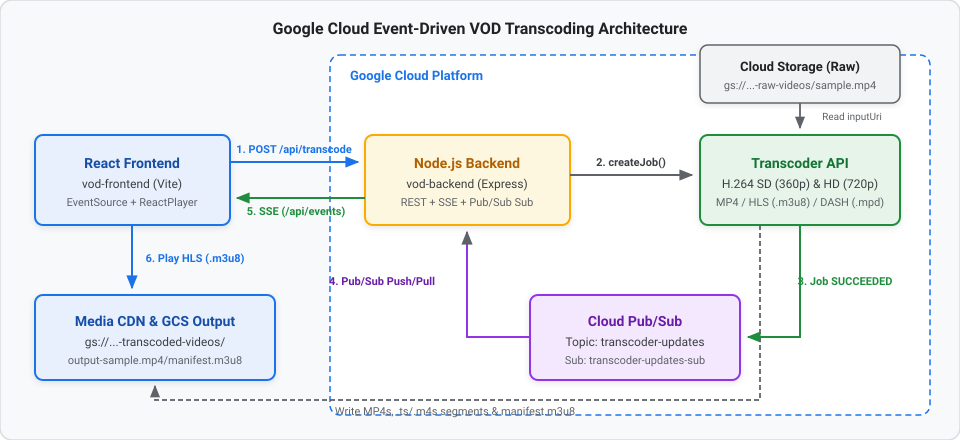

In this codelab, you will build an end-to-end, event-driven Video on Demand (VOD) transcoding application on Google Cloud.
Instead of polling the Transcoder API for job completion, you will implement an Event-Driven Architecture (EDA): when a video transcoding job finishes, the Google Cloud Transcoder API automatically publishes a state change notification to Cloud Pub/Sub. Your Node.js (Express) backend listens to a Pub/Sub subscription and pushes real-time status updates and the final streaming URL directly to a React frontend using Server-Sent Events (SSE).

View interactive diagram: Graphviz Architecture Diagram
vod-backend): /api/events) endpoint to push real-time updates to connected browsers./api/transcode) endpoint that configures multi-bitrate H.264 elementary streams (360p SD and 720p HD), container muxing (mp4, ts, fmp4), and adaptive bitrate manifests (HLS and DASH).SUCCEEDED events, queries the completed job metadata, constructs the playback URL, and broadcasts it via SSE.vod-frontend): react-player.gcloud) installed and authenticated.Before running the backend and frontend applications, set up the required Google Cloud resources.
Open a terminal and set your Google Cloud Project ID and preferred region:
export PROJECT_ID="your-project-id"
export LOCATION="us-central1"
gcloud config set project $PROJECT_ID
Enable the Video Transcoder, Cloud Pub/Sub, and Cloud Storage APIs:
gcloud services enable \
transcoder.googleapis.com \
pubsub.googleapis.com \
storage.googleapis.com
Create two buckets: one for raw uploaded source videos and one for the transcoded outputs (MP4s, HLS segments, DASH segments, and manifests).
# Bucket for source videos
gcloud storage buckets create gs://${PROJECT_ID}-raw-videos --location=$LOCATION
# Bucket for transcoded output streams and manifests
gcloud storage buckets create gs://${PROJECT_ID}-transcoded-videos --location=$LOCATION
Upload a sample video named sample.mp4 to your raw videos bucket:
gcloud storage cp /path/to/your/sample.mp4 gs://${PROJECT_ID}-raw-videos/sample.mp4
The Transcoder API will publish job state updates to a Pub/Sub topic, and our Node.js backend will consume messages from a pull subscription.
# Create the topic
gcloud pubsub topics create transcoder-updates
# Create the subscription for the Node.js worker
gcloud pubsub subscriptions create transcoder-updates-sub \
--topic=transcoder-updates
Ensure the Transcoder Service Agent has permission to publish job status updates to your Pub/Sub topic:
PROJECT_NUMBER=$(gcloud projects describe $PROJECT_ID --format="value(projectNumber)")
gcloud pubsub topics add-iam-policy-binding transcoder-updates \
--member="serviceAccount:service-${PROJECT_NUMBER}@gcp-sa-transcoder.iam.gserviceaccount.com" \
--role="roles/pubsub.publisher"
So your local Node.js server can call the Transcoder API and listen to Pub/Sub, authenticate with Application Default Credentials:
gcloud auth application-default login
Now let's build the Express backend that submits transcoding jobs, listens to Pub/Sub events, and streams real-time updates to the frontend over Server-Sent Events (SSE).
Create a new directory named vod-backend, initialize package.json, and install the required packages:
mkdir vod-backend && cd vod-backend
npm init -y
npm install express cors @google-cloud/video-transcoder @google-cloud/pubsub
Here is what each package does:
express: Web server framework for REST and SSE endpoints.cors: Enables Cross-Origin Resource Sharing so our Vite frontend can call the backend.@google-cloud/video-transcoder: Official Google Cloud client library to create and inspect Transcoder jobs.@google-cloud/pubsub: Official Google Cloud client library to subscribe to job completion events.Create a file named server.js inside vod-backend/ and add the initial setup and /api/events SSE endpoint:
const express = require('express');
const cors = require('cors');
const { TranscoderServiceClient } = require('@google-cloud/video-transcoder').v1;
const { PubSub } = require('@google-cloud/pubsub');
const app = express();
app.use(cors());
app.use(express.json());
const PROJECT_ID = 'your-project-id'; // Replace with your GCP Project ID
const LOCATION = 'us-central1';
const TOPIC_NAME = `projects/${PROJECT_ID}/topics/transcoder-updates`;
const SUB_NAME = 'transcoder-updates-sub';
const CDN_DOMAIN = 'https://media.yourdomain.com'; // Your Media CDN host or GCS public URL prefix
let clients = []; // Store connected SSE clients
// --- 1. Real-time SSE Endpoint ---
app.get('/api/events', (req, res) => {
res.setHeader('Content-Type', 'text/event-stream');
res.setHeader('Cache-Control', 'no-cache');
res.setHeader('Connection', 'keep-alive');
res.flushHeaders();
clients.push(res);
req.on('close', () => {
clients = clients.filter(client => client !== res);
});
});
const sendEventToClients = (data) => {
clients.forEach(client => client.write(`data: ${JSON.stringify(data)}\n\n`));
};
Next, add the transcoding job submission route and the Pub/Sub listener to vod-backend/server.js.
POST /api/transcode)Append the /api/transcode route to vod-backend/server.js:
// --- 2. Transcoder Submit Endpoint ---
app.post('/api/transcode', async (req, res) => {
const { fileName } = req.body; // e.g., 'sample.mp4'
console.log(fileName);
const transcoderClient = new TranscoderServiceClient();
const request = {
parent: transcoderClient.locationPath(PROJECT_ID, LOCATION),
job: {
inputUri: `gs://${PROJECT_ID}-raw-videos/${fileName}`,
outputUri: `gs://${PROJECT_ID}-transcoded-videos/output-${fileName}/`,
templateId: 'preset/web-hd',
config: {
pubsubDestination: { topic: TOPIC_NAME },
elementaryStreams: [
{
key: 'video-stream0',
videoStream: {
h264: {
widthPixels: 640,
heightPixels: 360,
frameRate: 30,
bitrateBps: 550000,
pixelFormat: 'yuv420p',
rateControlMode: 'vbr',
crfLevel: 21,
gopDuration: {
seconds: 3,
nanos: 0
},
vbvSizeBits: 550000,
vbvFullnessBits: 495000,
entropyCoder: 'cabac',
bFrameCount: 3,
aqStrength: 1,
profile: 'high',
preset: 'veryfast'
}
}
},
{
key: 'video-stream1',
videoStream: {
h264: {
widthPixels: 1280,
heightPixels: 720,
frameRate: 30,
bitrateBps: 2500000,
pixelFormat: 'yuv420p',
rateControlMode: 'vbr',
crfLevel: 21,
gopDuration: {
seconds: 3,
nanos: 0
},
vbvSizeBits: 2500000,
vbvFullnessBits: 2250000,
entropyCoder: 'cabac',
bFrameCount: 3,
aqStrength: 1,
profile: 'high',
preset: 'veryfast'
}
}
}
],
// 2. Package streams into containers (muxing)
muxStreams: [
{ key: 'sd', fileName: 'sd.mp4', container: 'mp4', elementaryStreams: ['video-stream0'] },
{ key: 'hd', fileName: 'hd.mp4', container: 'mp4', elementaryStreams: ['video-stream1'] },
{ key: 'media-sd', fileName: 'media-sd.ts', container: 'ts', elementaryStreams: ['video-stream0'] },
{ key: 'media-hd', fileName: 'media-hd.ts', container: 'ts', elementaryStreams: ['video-stream1'] },
{ key: 'video-only-sd', fileName: 'video-only-sd.m4s', container: 'fmp4', elementaryStreams: ['video-stream0'] },
{ key: 'video-only-hd', fileName: 'video-only-hd.m4s', container: 'fmp4', elementaryStreams: ['video-stream1'] },
],
// 3. Generate the Manifests (HLS and DASH)
manifests: [
{ fileName: 'manifest.m3u8', type: 'HLS', muxStreams: ['media-sd', 'media-hd'] },
{ fileName: 'manifest.mpd', type: 'DASH', muxStreams: ['video-only-sd', 'video-only-hd'] }
]
}
}
};
try {
const [response] = await transcoderClient.createJob(request);
res.json({ message: 'Job submitted', jobName: response.name });
} catch (error) {
console.error('Error submitting job:', error);
res.status(500).json({ error: error.message });
}
});
job ConfigurationThe job object defines where the media lives, how to notify your application when encoding finishes, and a 3-stage pipeline (elementaryStreams → muxStreams → manifests) that encodes once and packages everywhere.
inputUri: Points to the source video in Cloud Storage (gs://${PROJECT_ID}-raw-videos/${fileName}).outputUri: The destination prefix in Cloud Storage (gs://${PROJECT_ID}-transcoded-videos/output-${fileName}/). Note the required trailing slash (/).templateId vs. config: preset/web-hd is a built-in template, while config defines a custom inline JobConfig. When both are present, the inline config overrides the preset.pubsubDestination: { topic: TOPIC_NAME }: Configures the Transcoder API to automatically publish a JSON notification to your Cloud Pub/Sub topic whenever the job transitions to SUCCEEDED or FAILED.elementaryStreams)An elementary stream is a raw, uncontainerized encoded media bitstream. Here, we create an Adaptive Bitrate (ABR) encoding ladder with two H.264 (h264) video renditions:
video-stream0 (SD — 360p): 640x360 at 30 fps, targeting 550 kbps (bitrateBps: 550000) for low-bandwidth or mobile connections.video-stream1 (HD — 720p): 1280x720 at 30 fps, targeting 2.5 Mbps (bitrateBps: 2500000) for sharper playback on fast connections.Key H.264 encoder settings used in both streams:
pixelFormat: 'yuv420p': Standard 4:2:0 planar YUV pixel format required for universal browser and hardware decoder compatibility.rateControlMode: 'vbr' & crfLevel: 21: Uses Variable Bitrate (VBR) guided by Constant Rate Factor (21), allocating more bits to high-motion scenes and fewer bits to static scenes.vbvSizeBits & vbvFullnessBits: Configures the Video Buffering Verifier (VBV) buffer (1 second of max bitrate, 90% initial fullness) so bitrate spikes never stall a viewer's player buffer.gopDuration: { seconds: 3 }: Forces a keyframe (I-frame) every 3 seconds across both streams. Aligned Group of Pictures (GOP) boundaries allow video players to switch smoothly between 360p and 720p mid-playback without visual stutter.profile: 'high', entropyCoder: 'cabac', bFrameCount: 3, aqStrength: 1, preset: 'veryfast': Uses H.264 High Profile with CABAC lossless compression, 3 bi-directional frames (B-frames), and adaptive quantization (1) for high visual quality at fast encoding speeds (veryfast).muxStreams)Instead of re-encoding the video for each delivery format, muxStreams takes the already-encoded video-stream0 (SD) and video-stream1 (HD) bitstreams and wraps (muxes) them into three different container formats:
container: 'mp4'): Outputs sd.mp4 and hd.mp4 for progressive download.container: 'ts'): Outputs segmented .ts chunks (media-sd and media-hd) required for HLS streaming.container: 'fmp4'): Outputs segmented .m4s chunks (video-only-sd and video-only-hd) required for DASH streaming.manifests)Finally, manifests generates the master index files that adaptive video players read to switch bitrates dynamically:
manifest.m3u8 (type: 'HLS'): Apple HTTP Live Streaming master playlist that references the ['media-sd', 'media-hd'] MPEG-TS mux streams. Our React frontend passes this URL to manifest.mpd (type: 'DASH'): MPEG-DASH XML manifest that references the ['video-only-sd', 'video-only-hd'] fragmented MP4 mux streams.When the Transcoder API finishes processing the video, it publishes a JSON message to projects/${PROJECT_ID}/topics/transcoder-updates containing the job's resource name (data.job.name) and state (data.job.state).
When data.job.state === 'SUCCEEDED', our backend:
transcoderClient.getJob({ name: jobName }) to fetch the full job configuration.jobDetails.config.output.uri (e.g., gs://-transcoded-videos/output-sample.mp4/ ).output-sample.mp4).${CDN_DOMAIN}/${folder}/manifest.m3u8) and broadcasts { state: 'SUCCEEDED', url } to all SSE clients.Append the Pub/Sub subscriber and server listener to the bottom of vod-backend/server.js:
// --- 3. Pub/Sub Worker Listener ---
const pubsub = new PubSub({ projectId: PROJECT_ID });
const subscription = pubsub.subscription(SUB_NAME);
subscription.on('message', async message => {
try {
const transcoderClient = new TranscoderServiceClient();
const data = JSON.parse(message.data.toString());
console.log(data);
const jobName = data.job.name;
const jobState = data.job.state;
// Extract folder name from outputUri to build the CDN URL
if (data.job.state === 'SUCCEEDED') {
// 1. Ask the Transcoder API for the full configuration
const [jobDetails] = await transcoderClient.getJob({ name: jobName });
// 2. Extract the output URI
const outputUri = jobDetails.config.output.uri;
// 3. Parse the folder name
const folder = outputUri.split('/').filter(Boolean).pop();
const url = `${CDN_DOMAIN}/${folder}/manifest.m3u8`;
sendEventToClients({ state: 'SUCCEEDED', url: url });
}
} catch (err) {
console.error('Message parse error:', err);
}
message.ack();
});
app.listen(8080, () => console.log('Backend running on port 8080'));
Now let's build the React frontend that allows users to specify a video file in the raw bucket, start a transcoding job, monitor its state in real time, and play back the adaptive HLS stream once ready.
In a new terminal window (from the workspace root directory), scaffold a Vite React project and install react-player:
npm create vite@latest vod-frontend -- --template react
cd vod-frontend
npm install
npm install react-player
src/App.jsx)Replace the contents of vod-frontend/src/App.jsx with the following component:
import React, { useState, useEffect } from 'react';
import ReactPlayer from 'react-player';
import './App.css';
function App() {
const [fileName, setFileName] = useState('sample.mp4');
const [status, setStatus] = useState('Idle');
const [videoUrl, setVideoUrl] = useState(null);
useEffect(() => {
// Connect to the backend Server-Sent Events stream
const eventSource = new EventSource('http://localhost:8080/api/events');
eventSource.onmessage = (event) => {
const data = JSON.parse(event.data);
setStatus(data.state);
if (data.state === 'SUCCEEDED' && data.url) {
setVideoUrl(data.url);
}
};
return () => eventSource.close();
}, []);
const startTranscoding = async () => {
setStatus('Submitting...');
setVideoUrl(null);
try {
await fetch('http://localhost:8080/api/transcode', {
method: 'POST',
headers: { 'Content-Type': 'application/json' },
body: JSON.stringify({ fileName })
});
setStatus('Processing');
} catch (err) {
setStatus('Error submitting job');
}
};
return (
<div style={{ padding: '40px', fontFamily: 'sans-serif' }}>
<h2>Google Cloud VOD Pipeline</h2>
<div style={{ marginBottom: '20px' }}>
<input
type="text"
value={fileName}
onChange={(e) => setFileName(e.target.value)}
placeholder="File in raw bucket (e.g., sample.mp4)"
style={{ padding: '8px', width: '250px' }}
/>
<button onClick={startTranscoding} style={{ padding: '8px 16px', marginLeft: '10px' }}>
Transcode Video
</button>
</div>
<div style={{ marginBottom: '20px', padding: '15px', background: '#f1f3f4', borderRadius: '8px', display: 'inline-block' }}>
<strong>Status: </strong> {status}
</div>
{videoUrl && (
<div style={{ border: '2px solid #1a73e8', borderRadius: '8px', overflow: 'hidden', width: 'fit-content' }}>
<ReactPlayer
url={videoUrl}
controls={true}
playing={true}
width="800px"
height="450px"
/>
</div>
)}
</div>
);
}
export default App;
useEffect): When App mounts, it opens an EventSource connection to http://localhost:8080/api/events. Whenever the backend calls sendEventToClients(), eventSource.onmessage fires immediately.startTranscoding): Clicking Transcode Video sends a POST request to http://localhost:8080/api/transcode with { fileName } and updates the UI status to Processing.ReactPlayer): When the Pub/Sub message arrives and the backend pushes { state: 'SUCCEEDED', url }, React sets videoUrl and renders manifest.m3u8 HLS playlist.In your vod-backend terminal, start the Express and Pub/Sub listener server:
cd vod-backend
node server.js
You should see:
Backend running on port 8080
In a second terminal window, start the Vite development server:
cd vod-frontend
npm run dev
Open the local URL displayed in your terminal (typically http://localhost:5173) in your browser.
sample.mp4 (or the name of the video file you uploaded to gs://${PROJECT_ID}-raw-videos/) in the input box.sample.mp4
{
job: {
name: 'projects/.../locations/us-central1/jobs/...',
state: 'SUCCEEDED'
}
}
manifest.m3u8!You can verify all generated files (MP4s, .ts segments, .m4s segments, and both HLS/DASH manifests) in your output bucket:
gcloud storage ls gs://${PROJECT_ID}-transcoded-videos/output-sample.mp4/
Expected output files include:
sd.mp4 and hd.mp4media-sd.m3u8, media-hd.m3u8, and .ts video segmentsvideo-only-sd.m4s, video-only-hd.m4smanifest.m3u8 (master HLS playlist)manifest.mpd (DASH manifest)To avoid incurring ongoing Google Cloud charges, delete the resources created during this codelab:
# Delete Pub/Sub subscription and topic
gcloud pubsub subscriptions delete transcoder-updates-sub
gcloud pubsub topics delete transcoder-updates
# Delete Cloud Storage buckets and their contents
gcloud storage rm -r gs://${PROJECT_ID}-raw-videos
gcloud storage rm -r gs://${PROJECT_ID}-transcoded-videos
You have built an event-driven Video on Demand (VOD) transcoding pipeline using Google Cloud!
mp4, ts, fmp4), and adaptive streaming manifests (HLS and DASH).pubsubDestination to decouple job execution from completion handling via Cloud Pub/Sub.